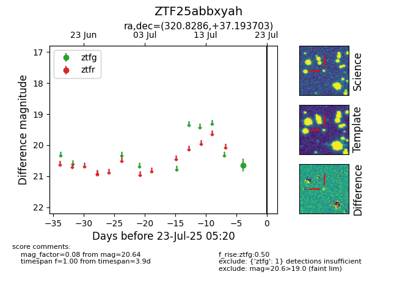

Target ZTF25abbxyah at 2025-07-23 12:37, see:
FINK: fink-portal.org/ZTF25abbxyah
Lasair: lasair-ztf.lsst.ac.uk/objects/ZTF25abbxyah
ALeRCE: alerce.online/object/ZTF25abbxyah
alt names
ZTF25abbxyah (ztf,fink)
coordinates:
equatorial (ra, dec) = (320.8286,+37.19370)
galactic (l, b) = (83.4197,-9.23774)
photometry
last ztfg=20.64
1 ztfg detections
